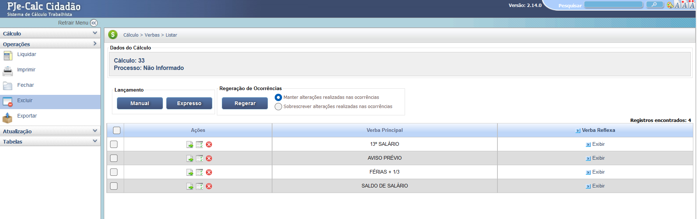
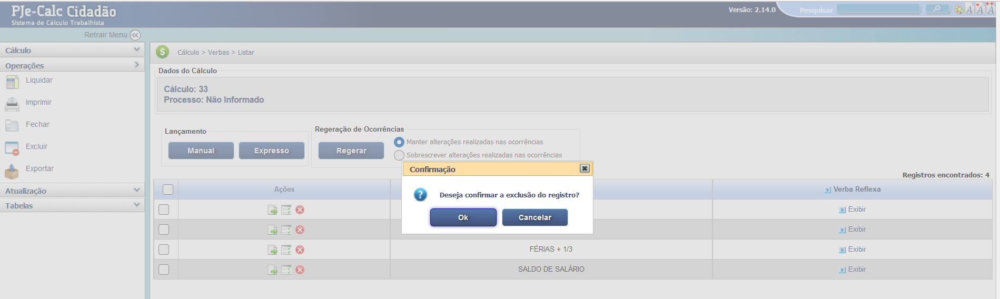

Manual Interativo de Cálculos Trabalhistas
Um guia completo e interativo para entender os cálculos na esfera judicial trabalhista.
Funcionalidade Excluir
O sistema PJe-Calc oferece duas formas de exclusão: 1. Exclusão de um Cálculo Completo e 2. Exclusão de Verbas/Registros Específicos dentro de um cálculo. A função "Excluir" no menu de Operações, quando selecionada no contexto do cálculo, pode se referir à exclusão do cálculo inteiro, mas também atua em registros específicos da tela.
1. Exclusão de Verbas Específicas
Na tela de listagem de Verbas, cada registro possui, na coluna "Ações", botões de edição (lápis) e exclusão (X vermelho). Para remover uma verba específica (como "13º Salário" ou "Aviso Prévio"), o usuário deve clicar no ícone de X vermelho localizado ao lado do registro a ser excluído.
2. Confirmação da Exclusão
Após clicar no ícone de exclusão (X), o sistema exibe uma caixa de diálogo de "Confirmação" para prevenir exclusões acidentais. A mensagem padrão é: "Deseja confirmar a exclusão do registro?". É necessário clicar em "Ok" para remover definitivamente a verba ou em "Cancelar" para manter o registro.
3. Exclusão de Cálculo Completo
Em algumas versões ou telas do sistema, ao clicar em "Excluir" no menu de Operações (localizado à esquerda, logo abaixo de "Fechar"), a ação pode ser direcionada para remover todo o cálculo em questão. Use essa opção com extrema cautela.